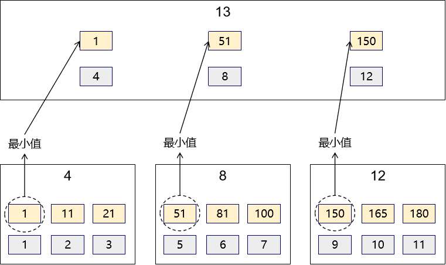

B+tree的倒推
推荐视频：【干货】数据库索引为什么使用B+Tree？_哔哩哔哩_bilibili
| emp_id(主键) | emp_age(非主键) | emp_name(非主键) |
|---|---|---|
| 1 | 21 | tom |
| 2 | 22 | jerry |
| 3 | 23 | bob |
| 4 | 24 | harry |
| 5 | 25 | lily |
| …… | …… | …… |
数据页
对于InnoDB 存储引擎来说，最小的存储单位就是：页。那么存放原始数据的页就称为数据页。
一个数据页默认的大小是：16KB。如果我们假设一条记录所占空间的字节数是1KB，那么这个数据页大致能够存储 16 条记录。那么如果这个数据库表总共有 100 万条记录，那么肯定是需要很多数据页来存放这些数据。
数据页内部
主键排序：数据页内部对主键进行了排序，所以当我们在一个数据页内部根据主键查找记录时，会根据二分法进行查找。找到主键就能够很快找到这条记录。
数据页编号：为了在众多数据页中，定位每一个数据页，数据页需要有编号。
如果不用索引，要怎么查找数据
排序：根据主键值对所有数据页进行排序
双向链表：把所有数据页组成双向链表
好处是：假设搜索主键值大于30 的记录，那么找到主键值为 30 的记录之后，后面所有的记录就都可以快速找到和返回了。
坏处是：扫描全表。就目前的数据存储方式来说，如果要找到某一个主键值所在的数据页，需要一页一页的查找，这无疑是非常缓慢的。所以肯定需要做进一步优化。
数据页设定目录
第一层目录
设置
选取每一个数据页中最小的主键值
最小主键值 + 当前数据页的页码 = 目录页中的一条记录
主键值 + 页码 组成的记录放在一起组成了目录页
不管是数据页还是目录页都是页，默认大小都是 16KB
估算目录页能够存储多少条记录？
主键值占 8 字节
页码占 8 字节
16 KB / 16 B = 1024 条
搜索
现在我们在 4 号目录页中有如下三个区间：
- 区间 1：[1,11)
- 区间 2：[11,21)
- 区间 3：[21, …)
搜索主键值为 11 的记录
select emp_id,emp_name,emp_age from t_emp where emp_id=11- 11 落在了区间 2：[11,21)
- 根据目录页中的 11->2 这条记录，得知想要的数据在页码为 2 的数据页
- 进入页码为 2 的数据页
- 在数据页内部根据主键做二分法查找
第二层目录
设置
为了更进一步方便查找，命中我们要找的目录页，我们可以进一步给目录再设置目录。
搜索
用户搜索的主键值是：60。现在 13 号目录页中包含的区间：
[1,51)
[51,150)
[150,…)
所以 60 会落在 [51,150) 区间，所以继续查找页码为 8 的目录页：
[51,81)
[81,100)
[100,…)
所以 60 会落在 [51,81) 区间，所以继续查找页码为 5 的数据页，根据主键执行二分法查找。
最终形成一个树形结构
对接概念
- B+Tree：其实这（上面的示意图）就是 B+Tree。在我们这里例子中，数据的主键就是 B+Tree 里面的索引，页码值就是指向数据存储位置的指针。只不过指针有可能指向数据页，也有可能指向目录页。
- B+Tree 节点：目录页或数据页都算是 B+Tree 中的节点。
- 页：是 InnoDB 存储引擎管理数据的最小单元。
- 节点：是从树形结构角度来说的。
- 索引值：在当前例子中，我们是拿主键字段的值作为索引
- 聚簇索引：主键和原始数据存放在一起的存储形式。简单的说就是索引值为主键的索引。
- 非聚簇索引：索引值不是主键的索引。
估算 B+Tree 能够存储的记录数量
- 结论：根据下面的推算使用 B+Tree 的形式来组织数据库表中数据的存储方式，只需要 2~4 层就足够了。
- 一层：只有一个根节点
- 这个根节点只能是数据页节点
- 一个数据页默认大小是：16KB
- 假设一条记录占空间：1K
- 能够存储的是数据数量：16 条
- 两层：
- 根节点：目录页
- 主键：8 B
- 页码：8 B
- 目录页的每一条记录：16 B
- 目录页能够存储的记录数量：16 KB / 16 B = 1024
- 对目录页来说：内部存储了多少条记录，就会指向多少个子节点
- 叶子节点：数据页
- 能够存储的是数据数量：16 条
- 目录页容量 × 数据页容量 = 1024 × 16 = 16384 条记录
- 根节点：目录页
- 三层：
- 根节点：1 个目录页
- 第二层：1024 个目录页
- 第三层：目录页的个数 × 目录页的容量 = 1024 × 1024 = 1048576 个数据页
- 总和：数据页的个数 × 数据页的容量= 1048576 × 16 = 16,777,216 条记录
- 四层：
- 根节点：1 个目录页
- 第二层：1024 个目录页
- 第三层：目录页的个数 × 目录页的容量 = 1024 × 1024 = 1048576 个目录页
- 第四层：目录页的个数 × 目录页的容量 = 1048576 × 1024 = 1,073,741,824 个数据页
- 总和：数据页的个数 × 数据页的容量= 1,073,741,824 × 16 = 17,179,869,184 条记录
B+Tree层次对性能的影响
根节点常驻内存。访问下一层的节点会导致一次I/O。 所以层数越少，I/O 的次数就越少，性能就越好。
为什么要使用B+tree（各种数据结构的比较）
推荐视频：SQL案例分析：数据库索引为什么是B+树？_哔哩哔哩_bilibili
推荐博客：MySQL索引-B+树（看完你就明白了） - 苍青浪 - 博客园 (cnblogs.com)
算法可视化的演示：Data Structure Visualization (usfca.edu)
全表扫描
如果我们不做任何优化的情况下，我们只能做全表扫描，看看是否有我们需要的数据。随着数据量的增长，扫描磁盘数据的性能急剧下降。
二叉查找树（二叉树）
二叉树的插入：
如果插入的Value比父节点小，会被放在其父节点的左边
如果插入的Value比父节点大，会被放在其父节点的右边边
假如说MySQL的索引结构采用二叉树的数据结构，比较理想的结构如下：
如果主键是顺序插入的，则会形成一个单向链表，结构如下：
所以，如果选择二叉树作为索引结构，会存在以下缺点：
- 顺序插入时，会形成一个链表，查询性能大大降低。
- 大数据量情况下，层级较深，检索速度慢
平衡二叉树（红黑树）
我们可以选择红黑树，红黑树是一颗自平衡二叉树，那这样即使是顺序插入数据，最终形成的数据结构也是一颗平衡的二叉树
但是，即使如此，由于红黑树也是一颗二叉树，所以也会存在一个缺点：大数据量情况下，层级较深，检索速度慢。
B Tree
B-Tree，B树是一种多叉路衡查找树，相对于二叉树，B树每个节点可以有多个分支
特点：
- 3阶的B树，每一个节点最多存储2个key，对应3个指针。
- 一旦节点存储的key数量到达3，就会裂变，中间元素向上分裂。
- 在B树中，非叶子节点和叶子节点都会存放数据。
B+tree
最终我们看到，B+Tree 与 B-Tree相比，主要有以下三点区别：
- 所有的数据都会出现在叶子节点。
- 叶子节点形成一个单向链表。
- 非叶子节点仅仅起到索引数据作用，具体的数据都是在叶子节点存放的。
因此B+tree相比B tree有以下优点：
BTree因为每个节点都保存原始数据，所以B Tree每个节点能够容纳的子节点比 B+Tree 要少，B Tree
整体层数比 B+Tree 要多。层级较深，检索速度慢另外，增加一个指向相邻叶子节点的链表指针，就形成了带有顺序指针的B+Tree，提高区间访问的性能，利于排序。
Hash
哈希索引就是采用一定的hash算法，将键值换算成新的hash值，映射到对应的槽位上，然后存储在hash表中。
如果两个(或多个)键值，映射到一个相同的槽位上，他们就产生了hash冲突（也称为hash碰撞），可以通过链表来解决。

特点：
- 查询效率高，通常(不存在hash冲突的情况)只需要一次检索就可以了，效率通常要高于B+tree索引
- Hash索引只能用于对等比较(=，in)，不支持范围查询（between，>，< ，…）
- 无法利用索引完成排序操作
总结
为什么InnoDB存储引擎选择使用B+tree索引结构?
- 相对于二叉树，层级更少，搜索效率高；
- 对于B-tree，无论是叶子节点还是非叶子节点，都会保存数据，这样导致一页中存储的键值减少，指针跟着减少，要同样保存大量数据，只能增加树的高度，导致性能降低；
- 相对Hash索引，B+tree支持范围匹配及排序操作；
索引的分类
功能逻辑
从功能逻辑上说，索引主要有 4 种，分别是普通索引、唯一索引、主键索引和全文索引。
普通索引
在创建普通索引时，不附加任何限制条件，主要用于提高查询效率。这类索引可以创建在任何数据类型中，其值是否唯一和非空，要由字段本身的完整性约束条件决定。建立索引以后，可以通过索引进行查询。例如，在表t_student的字段stuid上建立一个普通索引，查询记录时就可以根据该索引进行查询。
唯一性索引-UNIQUE
使用UNIQUE参数可以设置索引为唯一性索引，在创建唯一性索引时，限制该索引的值必须是唯一的，但允许有空值。在一张数据表里可以有多个唯一索引。
例如，在表t_student的字段name中创建唯一性索引，那么字段name的值就必须是唯一的。通过唯一性索引，可以更快速地确定某条记录。
主键索引
主键索引就是一种特殊的唯一性索引，在唯一索引的基础上增加了不为空的约束，也就是 NOT NULL+UNIQUE，一张表里最多只有一个主键索引。
Why？ 这是由主键索引的物理实现方式决定的，因为数据存储在文件中只能按照一种顺序进行存储。
全文索引-FULLTEXT
全文索引（也称全文检索）是目前搜索引擎使用的一种关键技术。它能够利用【分词技术】等多种算法智能分析出文本文字中关键词的频率和重要性，然后按照一定的算法规则智能地筛选出我们想要的搜索结果。
随着大数据时代的到来，关系型数据库应对全文索引的需求已力不从心，逐渐被 solr、elasticSearch等专门的搜索引擎所替代。
物理实现方式
聚簇索引
- 以主键作为索引值。
- 聚簇索引的叶子节点存储的就是我们的数据记录
- 一个表只能有一个聚簇索引，因为原始数据只能有一种排序存储的方式
- 使用聚簇索引的时候，数据的查询效率高，但如果对数据进行插入，删除，更新等操作，效率会比非聚簇索引低
非聚簇索引
- 主键之外其它形式数据作为索引值，也叫二级索引（英文名secondary index）
- 非聚簇索引的叶子节点存储的是数据位置——主键
- 非聚簇索引不会影响数据表的物理存储顺序
- 可以有多个非聚簇索引，也就是多个索引目录提供数据检索。
字段个数
单列索引
在表中的单个字段上创建索引。单列索引只根据该字段进行索引。单列索引可以是普通索引，也可以是唯一性索引，还可以是全文索引。只要保证该索引只对应一个字段即可。一个表可以有多个单列索引。
多列(组合、联合)索引
多列索引是在表的多个字段组合上创建一个索引。该索引指向创建时对应的多个字段，可以通过这几个字段进行查询，但是只有查询条件中使用了这些字段中的第一个字段时才会被使用。例如，在表中的字段id、name和gender上建立一个多列索引idx_id_name_gender，只有在查询条件中使用了字段id时该索引才会被使用。使用组合索引时遵循最左前缀原则。
非聚簇索引的存储结构
目录页的存储结构
单利索引的数据页存储结构，也就是非聚簇索引的数据页只存主键ID
多列索引的数据页的存储结构，这里的索引值是计算两个值得和
字符串类型能排序吗？
B+Tree 要求作为索引值的数据必须经过排序，这样方便执行二分法查找。而字符串可以根据它底层的Unicode 码进行排序。因为 Unicode 码是二进制数据，二进制数据（或十六进制数据）也是整数，所以当然可以比较大小，可以排序。
整体的结构：
回表
什么是回表
我们根据这个以非聚簇索引的索引列大小排序的 B+ 树只能确定我们要查找记录的主键值，所以如果我们想根据非聚簇索引的索引列的值查找到完整的用户记录的话，仍然需要回到聚簇索引中再查一遍，这个过程称为回表。也就是根据非聚簇索引的索引列的值查询一条完整的用户记录需要使用到两棵B+树！
直接把完整的用户记录放到叶子节点不OK吗
如果把完整的用户记录放到叶子节点是可以不用回表。但是太占地方了，相当于每建立一棵B+树都需要把所有的用户记录再都拷贝一遍，这就有点太浪费存储空间了。
非聚簇索引的存在不影响数据在聚簇索引中的组织，所以一张表可以有多个非聚簇索引
不回表的情况
如果最终需要使用的数据，在非聚簇索引中直接就能够拿到，那就不需要回表再查询聚簇索引。
select emp_name, emp_id from t_emp where emp_name = "xxx";
MySQL索引语法
再建表时创建主键索引
create database db_shop; use db_shop; create table t_customer ( pk_id int auto_increment primary key, customer_no varchar(200), customer_name varchar(200) );创建普通
# create index 索引名称 on 要建立索引的字段所在的表(要建立索引的字段); create index idx_customer_name on t_customer(customer_name);创建唯一索引/全文索引
# create unique index 索引名称 on 要建立索引的字段所在的表(要建立索引的字段); create unique index idx_customer_no on t_customer(customer_no); create FULLTEXT index idx_customer_no on t_customer(customer_no);联合索引
# create index 索引名称 on 要建立索引的字段所在的表(要建立索引的字段,...,要建立索引的字段); create index idx_customer_on_name on t_customer(customer_no, customer_name) ;查看索引
SHOW INDEX FROM t_customer ;删除索引
# drop index 要删除的索引名称 on 索引所在的表; drop index idx_customer_on_name on t_customer;
转载请注明来源，欢迎对文章中的引用来源进行考证，欢迎指出任何有错误或不够清晰的表达。可以在下面评论区评论，也可以邮件至 1909773034@qq.com